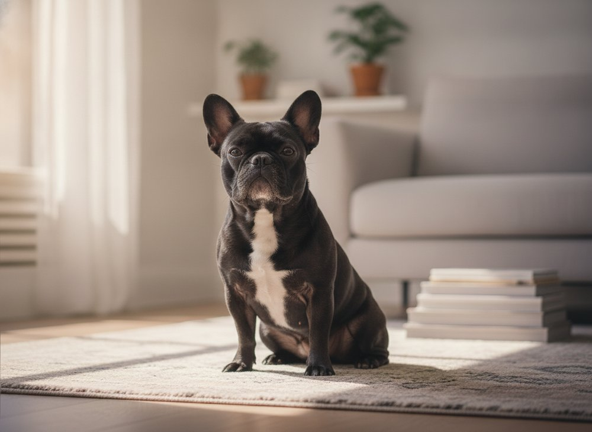
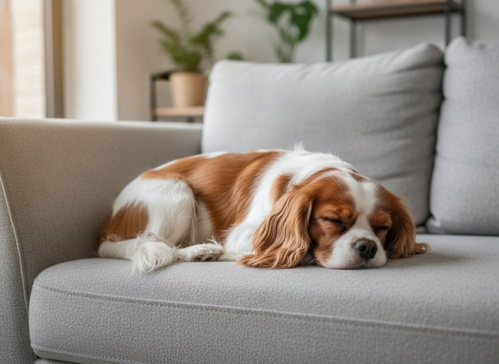
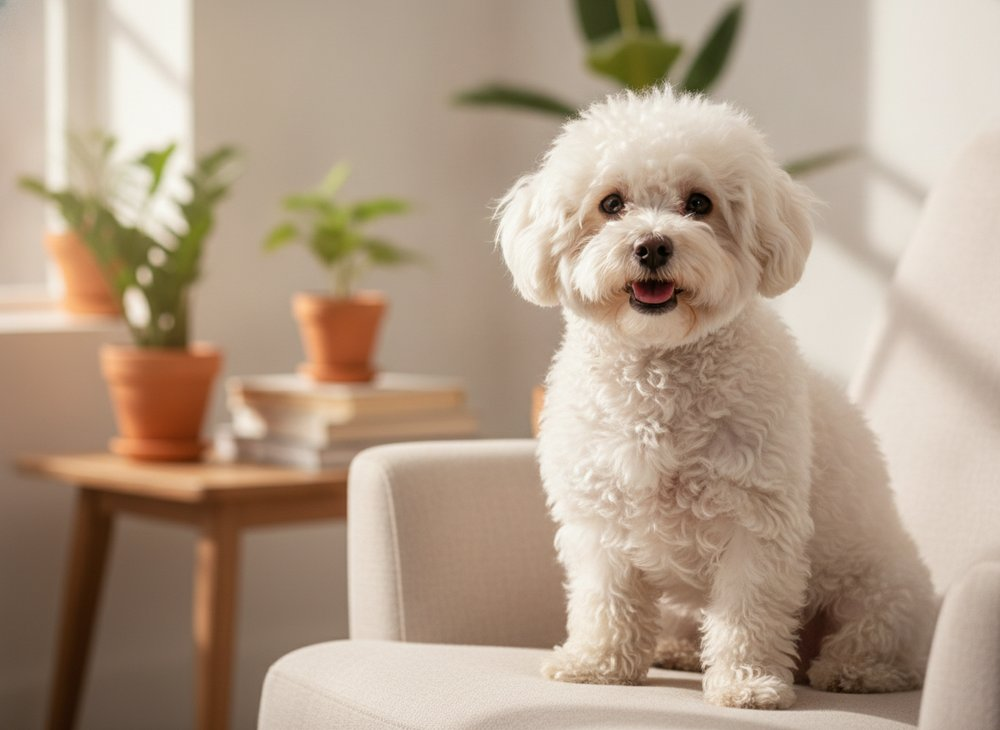
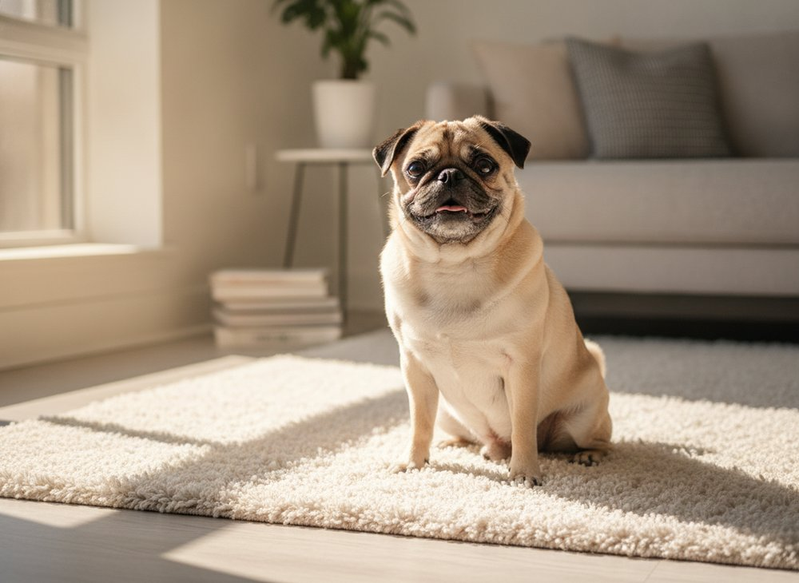
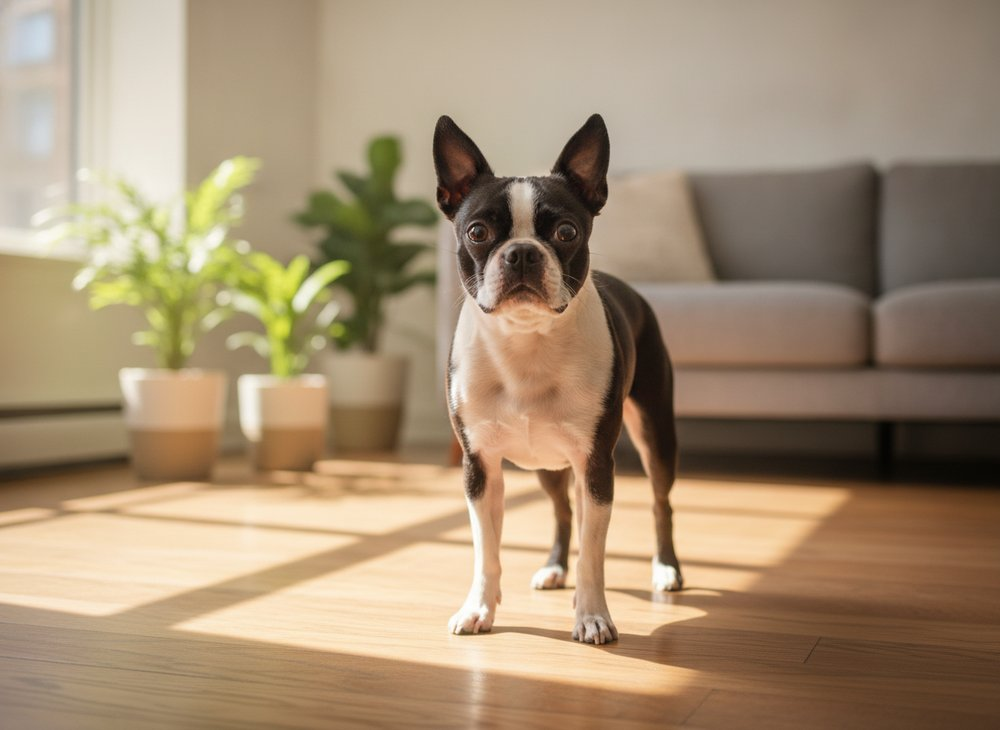
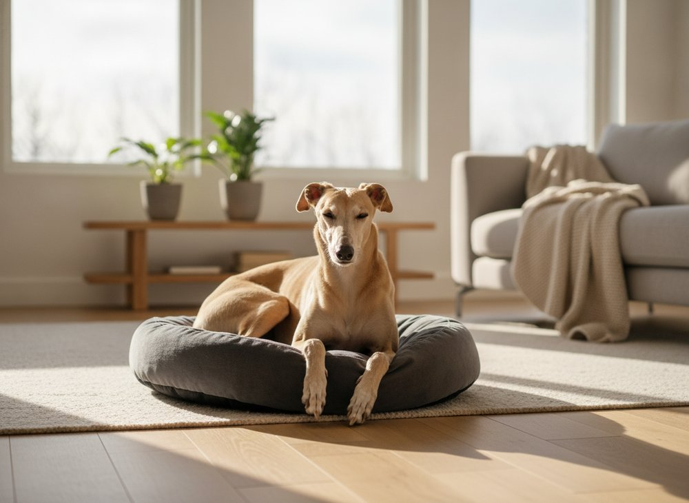
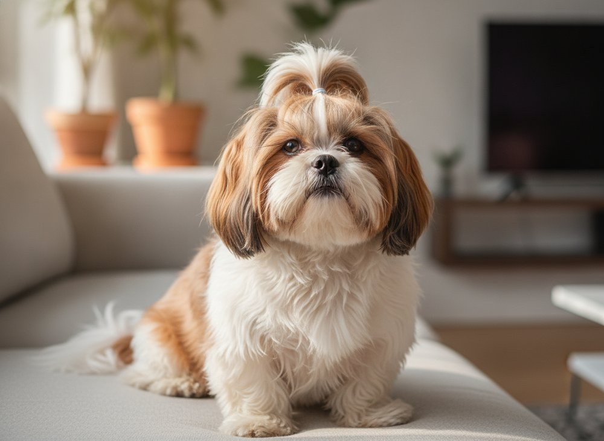
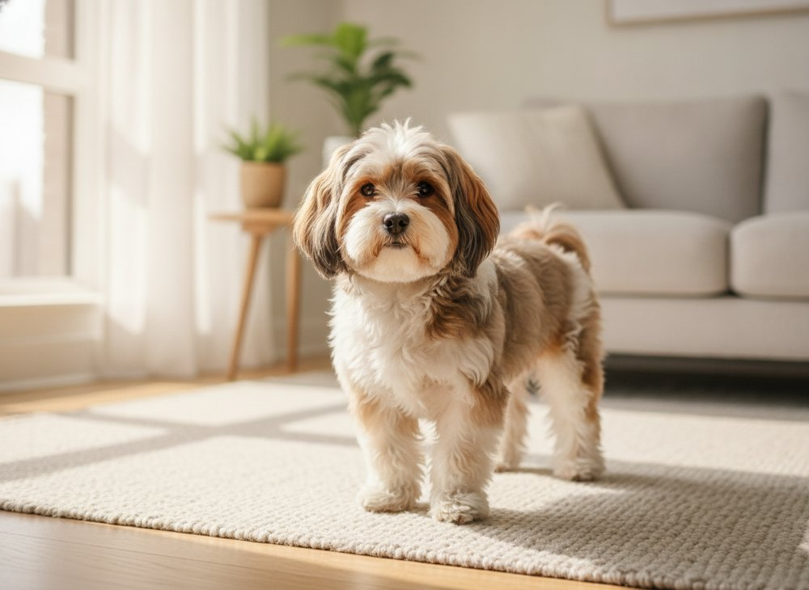
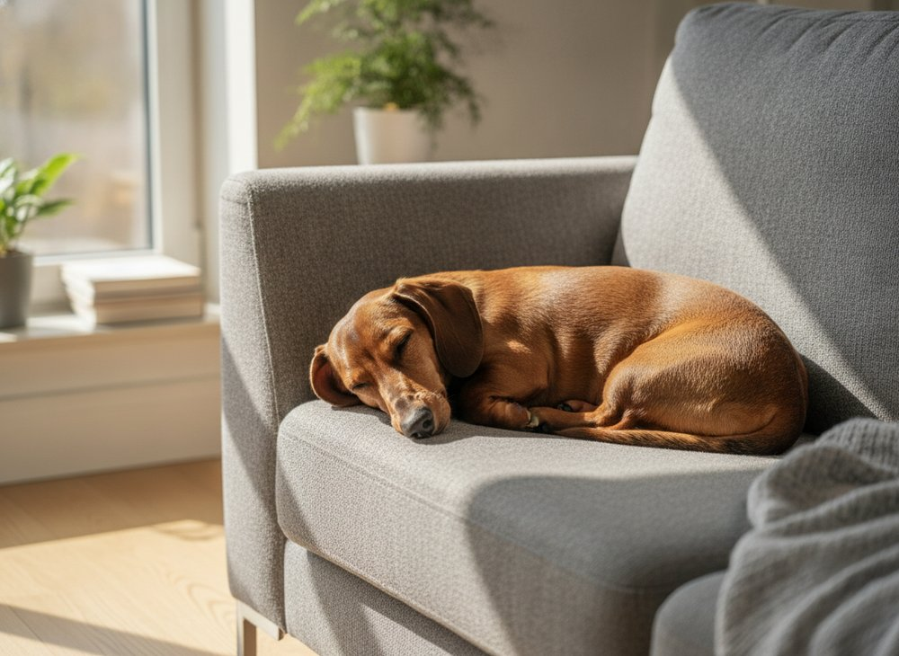

The 10 Best Dog Breeds for Apartments
Here's a truth the dog world doesn't say out loud enough: you don't need a backyard to give a dog a wonderful life. You need the right dog — and a little know-how. Some of the happiest dogs on earth live in 500 square feet with a human who adores them.
But pick the wrong breed for apartment life and you'll both feel it — the 6 a.m. zoomies, the barking that makes you dread the neighbors, the restlessness no amount of love can fix. So before you fall for a cute face, let's talk about what actually makes a dog thrive in a small space — including the one breed on this list that surprises almost everyone.
Forget size — this is what really matters
The biggest myth in apartment dog ownership is that small = suitable. It's not that simple. A hyper little terrier can be far harder in a flat than a calm giant. Four things matter more than the number on the scale:
- Energy level — can the dog switch off indoors, or does it need a job all day?
- Barking tendency — thin walls are unforgiving; quiet breeds keep the peace (and your lease).
- Adaptability & people-focus — apartment dogs are with you a lot. They should love that.
- Tolerance for alone time — some breeds nap happily; others spiral the moment you leave.
Keep those four in mind and this list makes perfect sense.
The 10 best dog breeds for apartments
1. French Bulldog
The unofficial mascot of apartment living. Frenchies are basically furry roommates who exist to nap on you, snort adorably, and greet you like a returning war hero. Low exercise needs, rarely yappy. Watch-out: as a flat-faced breed they overheat fast and can have breathing issues — keep them cool and skip strenuous heat-of-day walks.

2. Cavalier King Charles Spaniel
Velcro — in the best possible way. The Cavalier wants to be wherever you are, which is exactly the temperament a small space rewards. Gentle, quiet, endlessly cuddly. Watch-out: they hate being alone all day, and the breed is prone to heart issues — buy only from health-testing breeders.

3. Bichon Frise
A cotton ball with a comedian's soul — cheerful, friendly, and famously low-shedding, which makes the Bichon a favorite for allergy-prone apartment dwellers. Watch-out: they need regular grooming and can get vocal or anxious if left bored and alone too long.

4. Pug
Comedy in a compact package. Pugs are content to lounge, love everyone they meet, and ask for very little exercise — perfect for a cozy home. Watch-out: another flat-faced breed (mind the heat), and they gain weight easily, so keep the treats honest.

5. Boston Terrier
The dapper "American Gentleman." Friendly, adaptable and relatively quiet, with just enough energy to be fun and not enough to wreck your living room. Watch-out: flat-faced (heat sensitive) and prone to the occasional burst of zoomies that a quick play session solves.

6. Greyhound
The 45-mph couch potato. Yes — a Greyhound is a giant, and yes, it's one of the best apartment dogs alive. Sprinters by design, they're champion nappers by lifestyle: quiet, gentle, and content to sleep 18 hours a day after a couple of good runs. The surprise of this whole list. Watch-out: they need those daily sprints, feel the cold (thin coat — get a sweater), and many are sensitive souls.

7. Shih Tzu
Bred centuries ago to be a palace lapdog — a job they still take very seriously. Affectionate, mellow, and happy with short strolls and long cuddles. Watch-out: that gorgeous coat needs real grooming, and the flat face means a little heat caution.

8. Maltese
Tiny, devoted and low-shedding — a Maltese folds into apartment life beautifully and adores being a constant companion. Watch-out: they can become yappy or anxious without gentle training, and at this size they're delicate around very young kids.
9. Havanese
Cuba's velcro clown — bright, cheerful and so people-focused they're practically a shadow. Low-shedding and highly adaptable, they're built for life beside you. Watch-out: they crave company (not a leave-all-day dog) and the silky coat needs upkeep.

10. Dachshund
Big-dog personality in a small-dog footprint — loyal, funny and endlessly entertaining. Moderate needs make them flat-friendly. Watch-out: they're alert barkers (train it early for the neighbors' sake), stubborn, and that long back means no jumping off high furniture — protect those spines.

The breeds to think twice about
Gorgeous dogs, wrong setting. These tend to struggle in apartments — usually because of energy, noise, or a deep need for a job:
- High-drive working dogs (Border Collie, Australian Shepherd, Belgian Malinois) — brilliant, tireless, and miserable without hours of work.
- Vocal hounds & terriers (Beagle, Jack Russell) — bred to bay and dig; your neighbors will know.
- Northern breeds (Husky, Malamute) — athletes that shed cities of fur and howl the building awake.
None are "bad" — they just need space, jobs and tolerant neighbors most apartments can't offer.
How to make any apartment a dog's happy place
Honestly, the right routine matters as much as the right breed. Five things turn a small space into a content dog's whole world:
- Walk it like you mean it. Two real, sniff-everything walks a day beat one rushed lap. A tired dog is a quiet dog.
- Feed the brain. Lick mats, puzzle feeders and 5-minute training games burn more energy than you'd think.
- Build a potty plan. A consistent schedule (or a balcony pad as backup) saves everyone's sanity.
- Manage the barking early. Reward calm, desensitize hallway sounds — your lease and your neighbors will thank you.
- Give it a "den." A cozy bed or crate in a quiet corner gives a small-space dog a place that's all its own.
One last thing before you fall in love
Two reality checks save a lot of heartbreak. First, small doesn't mean cheap — food, vet care and grooming add up over 12–15 years; our pet cost calculator shows the real number. Second, apartment dogs are indoor dogs, which means the snacks you share matter even more — keep chocolate, grapes and other hazards out of reach, and check anything new in seconds with our free food checker or the full list of foods toxic to dogs.